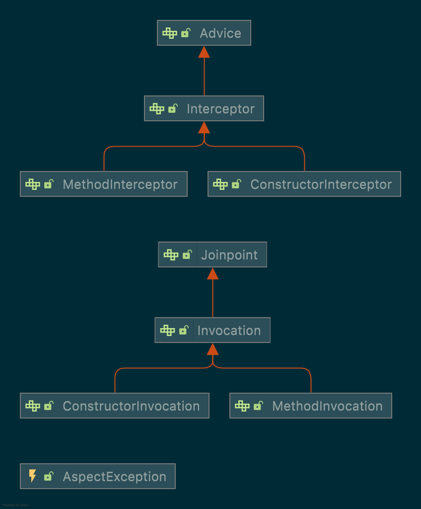

Aspect: A modularization of a concern that cuts across multiple classes. 方面，横跨多个类的模块化关注点。如果只是简单地横跨多个类，可以考虑使用继承 + 组合 + 设计模式。如果使用某种模式匹配来横跨多个类，才需要考虑使用 Aspect。
Join point: A point during the execution of a program, such as the execution of a method or the handling of an exception. In Spring AOP, a join point always represents a method execution. 结合点是我们最需要关注的东西，既包括了方法执行过程，也包含了异常处理过程。
Advice: Action taken by an aspect at a particular join point. 方面针对结合点采取的行动。对 Advice 而言，join point 经常是他们的参数（至少 Advice 对应的 Interceptor 里包装了这些参数）。
Pointcut: A predicate that matches join points. Advice is associated with a pointcut expression and runs at any join point matched by the pointcut (for example, the execution of a method with a certain name). The concept of join points as matched by pointcut expressions is central to AOP, and Spring uses the AspectJ pointcut expression language by default. 切点（英文是点切）实际上是对 Join point 进行判定的谓词。切点把 Join point 和 Advice 实际上结合起来了。默认的切点表达式来自于 AspectJ pointcut expression。
Advisor：Base interface holding AOP advice (action to take at a joinpoint) and a filter determining the applicability of the advice (such as a pointcut). This interface is not for use by Spring users, but to allow for commonality in support for different types of advice.
Spring AOP is based around around advice delivered via method interception, compliant with the AOP Alliance interception API. The Advisor interface allows support for different types of advice, such as before and after advice, which need not be implemented using interception. Advisor 不是给 Spring 用户用的。它包含一个 advice，是 一个 advice 的容器 - 相应地，Aspect 是包含很多 advice 的容器，这是个 Spring 用户用的。
Introductions：Declaring additional methods or fields on behalf of a type. 类似混型（mixin），在不打开原有类型以改变原有类型的内容的前提下（类似 Ruby 的元编程或者 C# 的 partial class），为类型增加新的功能。
Target object: An object being advised by one or more aspects. Also referred to as the “advised object”. Since Spring AOP is implemented by using runtime proxies, this object is always a proxied object. 目标对象、建议对象，即原始对象。
AOP proxy: An object created by the AOP framework in order to implement the aspect contracts (advise method executions and so on). In the Spring Framework, an AOP proxy is a JDK dynamic proxy or a CGLIB proxy. Interceptor、Proxy，aspect contracts 的实现。
Weaving: linking aspects with other application types or objects to create an advised object. This can be done at compile time (using the AspectJ compiler, for example), load time, or at runtime. Spring AOP, like other pure Java AOP frameworks, performs weaving at runtime. 织入，即把方面和 advised object 联系起来的过程。可以在编译时（性能最好）、装载时（容易被忽略）和运行时（所有的 pure java AOP framework 的默认选项）执行。大多数情况下，Spring AOP 已经够用了。
可以看出 Spring 的设计里面是尽可能地在 IOC 的基础上提供强大的auto-proxying服务，所有的增强功能，都是在代理里实现的，已解决企业级开发中常见的问题，而不是提供强大而完备的 AOP 实现（尽管它已经很强大了）。
所有声明、配置（不管是注解还是 xml 配置）：aspect、advice、pointcut、advisor、自己实现的 Interceptor、其他 proxies 可以混合使用，即 Mixing Aspect Types。
It is perfectly possible to mix @AspectJ style aspects by using the auto-proxying support, schema-defined aop:aspect aspects, aop:advisor declared advisors, and even proxies and interceptors in other styles in the same configuration. All of these are implemented by using the same underlying support mechanism and can co-exist without any difficulty.
within: Limits matching to join points within certain types (the execution of a method declared within a matching type when using Spring AOP) 以只在特定类型里的方法执行作为切点。execution 的阉割版本。
this: Limits matching to join points (the execution of methods when using Spring AOP) where the bean reference (Spring AOP proxy) is an instance of the given type. 这里的 this 是 proxy 的意思，限制 proxy - 当我们使用 JDK dynamic proxy 的时候，推荐使用这个 PCD（并不必然）。
target: Limits matching to join points (the execution of methods when using Spring AOP) where the target object (application object being proxied) is an instance of the given type. 限制目标类型。当我们使用 cglib proxy 的时候，推荐使用这个 PCD（并不必然）
args: Limits matching to join points (the execution of methods when using Spring AOP) where the arguments are instances of the given types. 限制参数。
1
@Pointcut("execution(* *..find*(Long))")
@target: Limits matching to join points (the execution of methods when using Spring AOP) where the class of the executing object has an annotation of the given type. 限制 target 有特定注解。这种切点配合特定的类注解特别有用！但实践中它可能会遇到 RuntimeTestWalker 检测的奇怪问题，这时候要换 @within。
@args: Limits matching to join points (the execution of methods when using Spring AOP) where the runtime type of the actual arguments passed have annotations of the given types. 限制参数有特定注解。
1 2 3 4 5 6 7 8
// Suppose that we want to trace all the methods accepting beans annotated with @Entity annotation: @Pointcut("@args(com.baeldung.pointcutadvice.annotations.Entity)") publicvoidmethodsAcceptingEntities() {}
@within: Limits matching to join points within types that have the given annotation (the execution of methods declared in types with the given annotation when using Spring AOP). 限制在类型有特定注解。
@annotation: Limits matching to join points where the subject of the join point (the method being executed in Spring AOP) has the given annotation. 限制连接点方法有特定注解。这种切点配合特定的方法注解特别有用，但不能用在类注解上！
// anyPublicOperation matches if a method execution join point represents the execution of any public method.
// inTrading matches if a method execution is in the trading module. @Pointcut("execution(public * *(..))") privatevoidanyPublicOperation() {}
// tradingOperation matches if a method execution represents any public method in the trading module. @Pointcut("within(com.xyz.someapp.trading..*)") privatevoidinTrading() {}
/** * A join point is in the web layer if the method is defined * in a type in the com.xyz.someapp.web package or any sub-package * under that. */ @Pointcut("within(com.xyz.someapp.web..*)") publicvoidinWebLayer() {}
/** * A join point is in the service layer if the method is defined * in a type in the com.xyz.someapp.service package or any sub-package * under that. */ @Pointcut("within(com.xyz.someapp.service..*)") publicvoidinServiceLayer() {}
/** * A join point is in the data access layer if the method is defined * in a type in the com.xyz.someapp.dao package or any sub-package * under that. */ @Pointcut("within(com.xyz.someapp.dao..*)") publicvoidinDataAccessLayer() {}
/** * A business service is the execution of any method defined on a service * interface. This definition assumes that interfaces are placed in the * "service" package, and that implementation types are in sub-packages. * * If you group service interfaces by functional area (for example, * in packages com.xyz.someapp.abc.service and com.xyz.someapp.def.service) then * the pointcut expression "execution(* com.xyz.someapp..service.*.*(..))" * could be used instead. * * Alternatively, you can write the expression using the 'bean' * PCD, like so "bean(*Service)". (This assumes that you have * named your Spring service beans in a consistent fashion.) */ @Pointcut("execution(* com.xyz.someapp..service.*.*(..))") publicvoidbusinessService() {}
/** * A data access operation is the execution of any method defined on a * dao interface. This definition assumes that interfaces are placed in the * "dao" package, and that implementation types are in sub-packages. */ @Pointcut("execution(* com.xyz.someapp.dao.*.*(..))") publicvoiddataAccessOperation() {}
// The execution of any public method: execution(public * *(..))
// The execution of any method with a name that begins with set: execution(* set*(..))
// The execution of any method defined by the AccountService interface: execution(* com.xyz.service.AccountService.*(..))
// The execution of any method defined in the service package: execution(* com.xyz.service.*.*(..))
// The execution of any method defined in the service package or one of its sub-packages: execution(* com.xyz.service..*.*(..))
// Any join point (method execution only in Spring AOP) within the service package: within(com.xyz.service.*)
// Any join point (method execution only in Spring AOP) within the service package or one of its sub-packages: within(com.xyz.service..*)
// Any join point (method execution only in Spring AOP) where the proxy implements the AccountService interface: this(com.xyz.service.AccountService)
// Any join point (method execution only in Spring AOP) where the target object implements the AccountService interface: target(com.xyz.service.AccountService)
// Any join point (method execution only in Spring AOP) that takes a single parameter and where the argument passed at runtime is Serializable: args(java.io.Serializable)
// Any join point (method execution only in Spring AOP) where the target object has a @Transactional annotation: @target(org.springframework.transaction.annotation.Transactional) You can also use '@target' in a binding form. See the Declaring Advice section for how to make the annotation object available in the advice body. Any join point(method execution only in Spring AOP) where the declared type of the target object has an @Transactional annotation:
@within(org.springframework.transaction.annotation.Transactional) You can also use '@within' in a binding form. See the Declaring Advice section for how to make the annotation object available in the advice body. Any join point(method execution only in Spring AOP) where the executing method has an @Transactional annotation:
@annotation(org.springframework.transaction.annotation.Transactional) You can also use '@annotation' in a binding form. See the Declaring Advice section for how to make the annotation object available in the advice body. Any join point(method execution only in Spring AOP) which takes a single parameter, and where the runtime type of the argument passed has the @Classified annotation:
@args(com.xyz.security.Classified) }
切点表达式会在编译时被优化，被重写成 DNF 范式形式，并且会被重排序，以提升性能。
注意，可以混合使用任何地方定义的切点：Java config 里的 bean 可以引用 xml 里定义的切点；反过来也可以。
After (finally) advice = returning + throwing，隐式包含 finally。释放资源适合放在这里。
around（大部分的 advice 都可以这样用，因为它兼容 before、after（实际上囊括了上面所有的 advice）， 而且管控范围最广）适合申请资源、释放资源、权限管理、日志，它因为是栈封闭的，所以是在方法执行前后，线程安全地共享状态（ share state before and after a method execution in a thread-safe manner） - timer 的合理方式。
注意：这个<aop:config/>依赖于auto-proxying机制，因而与AutoProxyCreator如BeanNameAutoProxyCreator是相互冲突的，所以两者不要混用，使用了aop:config类 xml 配置，则不要使用 BeanNameAutoProxyCreator 等 xml 配置，虽然后者也是一种 xml 配置-与 Mixing Aspect Types 的观点稍微有点冲突。换言之，<aop:config/>与<bean class="org.springframework.aop.framework.autoproxy.BeanNameAutoProxyCreator">或者手动创建的DefaultAdvisorAutoProxyCreator互斥。从优先级来讲，恐怕<aop:config/> 更适合大多数场景。
何谓 auto-proxy？Spring also lets us use “auto-proxy” bean definitions, which can automatically proxy selected bean definitions. This is built on Spring’s “bean post processor” infrastructure, which enables modification of any bean definition as the container loads.大意是用一些 bean definition 的配置（比如 xml 里的配置），触发 BeanPostProcessor 来做 auto proxing。 所有的 BeanPostProcessor 都 not eligible for auto-proxying。By auto-proxying, we mean that, if Spring determines that a bean is advised by one or more aspects, it automatically generates a proxy for that bean to intercept method invocations and ensures that advice is run as needed.
另外，被 @Aspect 注解标注的类，也是不会被代理的：Advising aspects with other aspects? In Spring AOP, aspects themselves cannot be the targets of advice from other aspects. The @Aspect annotation on a class marks it as an aspect and, hence, excludes it from auto-proxying.
// 即使指定了 proxy-target-class，此处也可以得到一个 interface 的 proxy Pojopojo= (Pojo) factory.getProxy(); // this is a method call on the proxy! pojo.foo(); } }
从外部调用 proxy，会调到 advice。self-invocation （大多数情况下）不会-因为，Finally, it must be noted that AspectJ does not have this self-invocation issue because it is not a proxy-based AOP framework，AspectJ 还是很强大的。但我们几乎不会用到 AspectJ 的 compiler 或者 weaver，所以我们熟知的都是 pure Spring AOP proxy，仍然满足“self-invocation 不会调到 advice”这一定律。
/** * ThreadLocal holder for AOP proxy associated with this thread. * Will contain {@code null} unless the "exposeProxy" property on * the controlling proxy configuration has been set to "true". * @see ProxyConfig#setExposeProxy */ privatestaticfinal ThreadLocal<Object> currentProxy = newNamedThreadLocal<>("Current AOP proxy");
privateAopContext() { }
/** * Try to return the current AOP proxy. This method is usable only if the * calling method has been invoked via AOP, and the AOP framework has been set * to expose proxies. Otherwise, this method will throw an IllegalStateException. * @return the current AOP proxy (never returns {@code null}) * @throws IllegalStateException if the proxy cannot be found, because the * method was invoked outside an AOP invocation context, or because the * AOP framework has not been configured to expose the proxy */ publicstatic Object currentProxy()throws IllegalStateException { Objectproxy= currentProxy.get(); if (proxy == null) { thrownewIllegalStateException( "Cannot find current proxy: Set 'exposeProxy' property on Advised to 'true' to make it available."); } return proxy; }
/** * Make the given proxy available via the {@code currentProxy()} method. * <p>Note that the caller should be careful to keep the old value as appropriate. * @param proxy the proxy to expose (or {@code null} to reset it) * @return the old proxy, which may be {@code null} if none was bound * @see #currentProxy() */ @Nullable static Object setCurrentProxy(@Nullable Object proxy) { Objectold= currentProxy.get(); if (proxy != null) { currentProxy.set(proxy); } else { currentProxy.remove(); } return old; }
}
@AspectJ 代理的创建方法
注意，这里产生的还是 proxy，适用于注解 bean：
1 2 3 4 5 6 7 8 9 10 11 12 13
// create a factory that can generate a proxy for the given target object AspectJProxyFactoryfactory=newAspectJProxyFactory(targetObject);
// add an aspect, the class must be an @AspectJ aspect // you can call this as many times as you need with different aspects // 这里增强用的就是 Aspect 了 factory.addAspect(SecurityManager.class);
// you can also add existing aspect instances, the type of the object supplied must be an @AspectJ aspect factory.addAspect(usageTracker);
// now get the proxy object... MyInterfaceTypeproxy= factory.getProxy();
// 这个 bean 方法有的项目建议有，但其实没有也无所谓 // @Bean // public ProfilingAspect interceptor() { // // This will barf at runtime if the weaver isn't working (probably a // // good thing) // return Aspects.aspectOf(ProfilingAspect.class); // }
}
启动的时候加上这个 vm args（暂时不要使用 spring-instrument.jar）： * -javaagent:${HOME}/.m2/repository/org/aspectj/aspectjweaver/1.9.5/aspectjweaver-1.9.5.jar
<propertyname="target"ref="personTarget"/> <propertyname="interceptorNames"> <list> <!-- You might be wondering why the list does not hold bean references. The reason for this is that, if the singleton property of the ProxyFactoryBean is set to false, it must be able to return independent proxy instances. If any of the advisors is itself a prototype, an independent instance would need to be returned, so it is necessary to be able to obtain an instance of the prototype from the factory. Holding a reference is not sufficient. --> <value>myAdvisor</value> <value>debugInterceptor</value> </list> </property> </bean>
// Add an advice like an interceptor without a pointcut // Will match all proxied methods // Can use for interceptors, before, after returning or throws advice advised.addAdvice(newDebugInterceptor());
// Add selective advice using a pointcut advised.addAdvisor(newDefaultPointcutAdvisor(mySpecialPointcut, myAdvice));
assertEquals("Added two advisors", oldAdvisorCount + 2, advised.getAdvisors().length);
spring-aop 模块的 jar 里包含 org.aopalliance 和 org.springframework.aop 这两个包。第一个包是 rod johnson 借 aopalliance 之名定义了如下抽象：

然后第二个包引用第一个包的抽象，定义各种 Spring 内建的 Advice、Advisor（注意，这个概念是 Spring AOP 才有的）、Matcher、Pointcu、AopProxy、AopContext、AopProxyFactory。它还有一个专门的子包，专门处理 aspectj 相关问题。
pring-core 模块的 jar 里，隐藏了另一个 MethodInterceptor，是为了 cglib proxy 的 callback 链准备的。
// 可以认为 Spring 的 schema-based 的解析都要靠 XXXNameSpaceHandler 来完成从 xml element 到 BeanDefinition 的配置流程 publicclassAopNamespaceHandlerextendsNamespaceHandlerSupport { /** * Register the {@link BeanDefinitionParser BeanDefinitionParsers} for the * '{@code config}', '{@code spring-configured}', '{@code aspectj-autoproxy}' * and '{@code scoped-proxy}' tags. */ @Override publicvoidinit() { // 注册搁置 BeanDefinitionParser，和 tag 联系起来，这里把 BeanDefinition 的初始化进一步交给一个抽象，这里的 parser 集合实际上是一个 map // In 2.0 XSD as well as in 2.1 XSD. registerBeanDefinitionParser("config", newConfigBeanDefinitionParser()); registerBeanDefinitionParser("aspectj-autoproxy", newAspectJAutoProxyBeanDefinitionParser()); registerBeanDefinitionDecorator("scoped-proxy", newScopedProxyBeanDefinitionDecorator());
// Only in 2.0 XSD: moved to context namespace as of 2.1 registerBeanDefinitionParser("spring-configured", newSpringConfiguredBeanDefinitionParser()); } }
如果我们使用的 aop 配置是：
1 2 3 4
<!-- 强制使用 cglib proxy 的一种方法 --> <aop:configproxy-target-class="true"> <!-- other beans defined here... --> </aop:config>
/** * Configures the auto proxy creator needed to support the {@link BeanDefinition BeanDefinitions} * created by the '{@code <aop:config/>}' tag. Will force class proxying if the * '{@code proxy-target-class}' attribute is set to '{@code true}'. * @see AopNamespaceUtils */ privatevoidconfigureAutoProxyCreator(ParserContext parserContext, Element element) { // AopNamespaceUtils.registerAspectJAutoProxyCreatorIfNecessary(parserContext, element); }
publicstaticvoidregisterAspectJAutoProxyCreatorIfNecessary( ParserContext parserContext, Element sourceElement) { // 从 xml 元素转化为 BeanDefinition BeanDefinitionbeanDefinition= AopConfigUtils.registerAspectJAutoProxyCreatorIfNecessary( parserContext.getRegistry(), parserContext.extractSource(sourceElement)); useClassProxyingIfNecessary(parserContext.getRegistry(), sourceElement); registerComponentIfNecessary(beanDefinition, parserContext); }
// 在这里确认是否这个 bean 会 proxyTargetClass privatestaticvoiduseClassProxyingIfNecessary(BeanDefinitionRegistry registry, @Nullable Element sourceElement) { if (sourceElement != null) { booleanproxyTargetClass= Boolean.parseBoolean(sourceElement.getAttribute(PROXY_TARGET_CLASS_ATTRIBUTE)); if (proxyTargetClass) { AopConfigUtils.forceAutoProxyCreatorToUseClassProxying(registry); } booleanexposeProxy= Boolean.parseBoolean(sourceElement.getAttribute(EXPOSE_PROXY_ATTRIBUTE)); if (exposeProxy) { AopConfigUtils.forceAutoProxyCreatorToExposeProxy(registry); } } }
/** * Create a {@link RootBeanDefinition} for the advisor described in the supplied. Does <strong>not</strong> * parse any associated '{@code pointcut}' or '{@code pointcut-ref}' attributes. */ private AbstractBeanDefinition createAdvisorBeanDefinition(Element advisorElement, ParserContext parserContext) { RootBeanDefinitionadvisorDefinition=newRootBeanDefinition(DefaultBeanFactoryPointcutAdvisor.class); advisorDefinition.setSource(parserContext.extractSource(advisorElement));
除此之外，还有其他我们常见的 xml 配置，而且他们对 proxy creator 的影响是相互的、全局的（只要有一个指定 AspectJ，就会导致全局 AspectJ）：
To be clear, using proxy-target-class=“true” on <tx:annotation-driven/>, <aop:aspectj-autoproxy/>, or <aop:config/>
elements forces the use of CGLIB proxies for all three of them.
由 Spring 自己根据上下文，决定生成 还是 ，当然，这个行为实际上是受proxy-target-class="true这一属性控制的。引述官方文档如下：
If the target object to be proxied implements at least one interface
then a JDK dynamic proxy will be used. All of the interfaces
implemented by the target type will be proxied. If the target object
does not implement any interfaces then a CGLIB proxy will be created.
如果要代理的目标对象实现至少一个接口，则将使用JDK动态代理。 目标类型实现的所有接口都将被代理。
如果目标对象未实现任何接口，则将创建CGLIB代理。
// ConfigurationClassPostProcessor 里 ConfigurationClassEnhancerenhancer=newConfigurationClassEnhancer(); for (Map.Entry<String, AbstractBeanDefinition> entry : configBeanDefs.entrySet()) { AbstractBeanDefinitionbeanDef= entry.getValue(); // If a @Configuration class gets proxied, always proxy the target class beanDef.setAttribute(AutoProxyUtils.PRESERVE_TARGET_CLASS_ATTRIBUTE, Boolean.TRUE); // Set enhanced subclass of the user-specified bean class Class<?> configClass = beanDef.getBeanClass(); Class<?> enhancedClass = enhancer.enhance(configClass, this.beanClassLoader); if (configClass != enhancedClass) { if (logger.isTraceEnabled()) { logger.trace(String.format("Replacing bean definition '%s' existing class '%s' with " + "enhanced class '%s'", entry.getKey(), configClass.getName(), enhancedClass.getName())); } beanDef.setBeanClass(enhancedClass); } }
/** * 这是更早获取候选 advisor 的地方，比 DefaultAdvisorChainFactory 更早 * Find all eligible Advisors for auto-proxying this class. * @param beanClass the clazz to find advisors for * @param beanName the name of the currently proxied bean * @return the empty List, not {@code null}, * if there are no pointcuts or interceptors * @see #findCandidateAdvisors * @see #sortAdvisors * @see #extendAdvisors */ protected List<Advisor> findEligibleAdvisors(Class<?> beanClass, String beanName) { // 找出所有的 advisor List<Advisor> candidateAdvisors = findCandidateAdvisors(); // 把所有的 advisor 的 poincut 里的 classMatcher 对目标的 beanClass 过一遍 List<Advisor> eligibleAdvisors = findAdvisorsThatCanApply(candidateAdvisors, beanClass, beanName); extendAdvisors(eligibleAdvisors); if (!eligibleAdvisors.isEmpty()) { eligibleAdvisors = sortAdvisors(eligibleAdvisors); } return eligibleAdvisors; }
@Override protected List<Advisor> findCandidateAdvisors() { // 非 aspectJ 的 advisor 在这里被发现 // Add all the Spring advisors found according to superclass rules. List<Advisor> advisors = super.findCandidateAdvisors(); // Build Advisors for all AspectJ aspects in the bean factory. // aspectJ 的 advisor 在这里被发现，通常我们会得到 InstantiationModelAwarePointcutAdvisorImpl，下面会讲到 if (this.aspectJAdvisorsBuilder != null) { advisors.addAll(this.aspectJAdvisorsBuilder.buildAspectJAdvisors()); } return advisors; }
// 底层通过这个方法确认一个 advisor 是否可以匹配 targetClass publicstaticbooleancanApply(Advisor advisor, Class<?> targetClass, boolean hasIntroductions) { if (advisor instanceof IntroductionAdvisor) { return ((IntroductionAdvisor) advisor).getClassFilter().matches(targetClass); } elseif (advisor instanceof PointcutAdvisor) { PointcutAdvisorpca= (PointcutAdvisor) advisor; // 匹配算法：这个匹配算法解决了切点表达式的匹配问题 return canApply(pca.getPointcut(), targetClass, hasIntroductions); } else { // It doesn't have a pointcut so we assume it applies. returntrue; } }
if (proxyFactory.isProxyTargetClass()) { // Explicit handling of JDK proxy targets (for introduction advice scenarios) if (Proxy.isProxyClass(beanClass)) { // Must allow for introductions; can't just set interfaces to the proxy's interfaces only. for (Class<?> ifc : beanClass.getInterfaces()) { proxyFactory.addInterface(ifc); } } } else { // No proxyTargetClass flag enforced, let's apply our default checks... if (shouldProxyTargetClass(beanClass, beanName)) { proxyFactory.setProxyTargetClass(true); } else { evaluateProxyInterfaces(beanClass, proxyFactory); } }
proxyFactory.setFrozen(this.freezeProxy); // AbstractAutoProxyCreator 会在这一步总是返回 true if (advisorsPreFiltered()) { proxyFactory.setPreFiltered(true); }
// Use original ClassLoader if bean class not locally loaded in overriding class loader ClassLoaderclassLoader= getProxyClassLoader(); if (classLoader instanceof SmartClassLoader && classLoader != beanClass.getClassLoader()) { classLoader = ((SmartClassLoader) classLoader).getOriginalClassLoader(); } // 到这一步就进入 proxy 体系了 return proxyFactory.getProxy(classLoader); }
public List<Advisor> buildAspectJAdvisors() { List<String> aspectNames = this.aspectBeanNames;
if (aspectNames == null) { synchronized (this) { aspectNames = this.aspectBeanNames; if (aspectNames == null) { List<Advisor> advisors = newArrayList<>(); aspectNames = newArrayList<>(); String[] beanNames = BeanFactoryUtils.beanNamesForTypeIncludingAncestors( this.beanFactory, Object.class, true, false); for (String beanName : beanNames) { if (!isEligibleBean(beanName)) { continue; } // We must be careful not to instantiate beans eagerly as in this case they // would be cached by the Spring container but would not have been weaved. Class<?> beanType = this.beanFactory.getType(beanName, false); if (beanType == null) { continue; } // 这里差不多把所有的 Spring Bean 都遍历过了，只挑选带有 aspect 注解的 bean 出来 if (this.advisorFactory.isAspect(beanType)) { aspectNames.add(beanName); AspectMetadataamd=newAspectMetadata(beanType, beanName); if (amd.getAjType().getPerClause().getKind() == PerClauseKind.SINGLETON) { // 生成一个特定的 MetadataAwareAspectInstanceFactory MetadataAwareAspectInstanceFactoryfactory= newBeanFactoryAspectInstanceFactory(this.beanFactory, beanName); List<Advisor> classAdvisors = this.advisorFactory.getAdvisors(factory); if (this.beanFactory.isSingleton(beanName)) { this.advisorsCache.put(beanName, classAdvisors); } else { this.aspectFactoryCache.put(beanName, factory); } advisors.addAll(classAdvisors); } else { // Per target or per this. if (this.beanFactory.isSingleton(beanName)) { thrownewIllegalArgumentException("Bean with name '" + beanName + "' is a singleton, but aspect instantiation model is not singleton"); } MetadataAwareAspectInstanceFactoryfactory= newPrototypeAspectInstanceFactory(this.beanFactory, beanName); this.aspectFactoryCache.put(beanName, factory); advisors.addAll(this.advisorFactory.getAdvisors(factory)); } } } this.aspectBeanNames = aspectNames; return advisors; } } }
// We need to wrap the MetadataAwareAspectInstanceFactory with a decorator // so that it will only instantiate once. MetadataAwareAspectInstanceFactorylazySingletonAspectInstanceFactory= newLazySingletonAspectInstanceFactoryDecorator(aspectInstanceFactory);
List<Advisor> advisors = newArrayList<>(); // 在这里根据每个 method 生成一个 advisor for (Method method : getAdvisorMethods(aspectClass)) { // Prior to Spring Framework 5.2.7, advisors.size() was supplied as the declarationOrderInAspect // to getAdvisor(...) to represent the "current position" in the declared methods list. // However, since Java 7 the "current position" is not valid since the JDK no longer // returns declared methods in the order in which they are declared in the source code. // Thus, we now hard code the declarationOrderInAspect to 0 for all advice methods // discovered via reflection in order to support reliable advice ordering across JVM launches. // Specifically, a value of 0 aligns with the default value used in // AspectJPrecedenceComparator.getAspectDeclarationOrder(Advisor). // 这一步是把方法包装成 advisor 的流程 Advisoradvisor= getAdvisor(method, lazySingletonAspectInstanceFactory, 0, aspectName); if (advisor != null) { advisors.add(advisor); } }
// If it's a per target aspect, emit the dummy instantiating aspect. if (!advisors.isEmpty() && lazySingletonAspectInstanceFactory.getAspectMetadata().isLazilyInstantiated()) { AdvisorinstantiationAdvisor=newSyntheticInstantiationAdvisor(lazySingletonAspectInstanceFactory); advisors.add(0, instantiationAdvisor); }
// Find introduction fields. for (Field field : aspectClass.getDeclaredFields()) { Advisoradvisor= getDeclareParentsAdvisor(field); if (advisor != null) { advisors.add(advisor); } }
/** * Find all eligible Advisor beans in the current bean factory, * ignoring FactoryBeans and excluding beans that are currently in creation. * @return the list of {@link org.springframework.aop.Advisor} beans * @see #isEligibleBean */ public List<Advisor> findAdvisorBeans() { // Determine list of advisor bean names, if not cached already. String[] advisorNames = this.cachedAdvisorBeanNames; if (advisorNames == null) { // Do not initialize FactoryBeans here: We need to leave all regular beans // uninitialized to let the auto-proxy creator apply to them! advisorNames = BeanFactoryUtils.beanNamesForTypeIncludingAncestors( this.beanFactory, Advisor.class, true, false); this.cachedAdvisorBeanNames = advisorNames; } if (advisorNames.length == 0) { returnnewArrayList<>(); }
// advisors 在这里做最初的逐个匹配，只要不是创建中，都会在列表中返回 List<Advisor> advisors = newArrayList<>(); for (String name : advisorNames) { if (isEligibleBean(name)) { // 如果存在一个环形依赖，则此处会返回 true，这个 advisor 就被无声抛弃了！ if (this.beanFactory.isCurrentlyInCreation(name)) { if (logger.isTraceEnabled()) { logger.trace("Skipping currently created advisor '" + name + "'"); } } else { try { advisors.add(this.beanFactory.getBean(name, Advisor.class)); } catch (BeanCreationException ex) { ThrowablerootCause= ex.getMostSpecificCause(); if (rootCause instanceof BeanCurrentlyInCreationException) { BeanCreationExceptionbce= (BeanCreationException) rootCause; StringbceBeanName= bce.getBeanName(); if (bceBeanName != null && this.beanFactory.isCurrentlyInCreation(bceBeanName)) { if (logger.isTraceEnabled()) { logger.trace("Skipping advisor '" + name + "' with dependency on currently created bean: " + ex.getMessage()); } // Ignore: indicates a reference back to the bean we're trying to advise. // We want to find advisors other than the currently created bean itself. continue; } } throw ex; } } } } return advisors; }
/** * Set the interfaces to be proxied. */ publicvoidsetInterfaces(Class<?>... interfaces) { Assert.notNull(interfaces, "Interfaces must not be null"); // 这里的 clear 需要注意好 this.interfaces.clear(); for (Class<?> ifc : interfaces) { addInterface(ifc); } }
/** * Add a new proxied interface. * [@param] intf the additional interface to proxy */ publicvoidaddInterface(Class<?> intf) { Assert.notNull(intf, "Interface must not be null"); if (!intf.isInterface()) { thrownewIllegalArgumentException("[" + intf.getName() + "] is not an interface"); } if (!this.interfaces.contains(intf)) { this.interfaces.add(intf); adviceChanged(); } }
/** * Propagate advice change event to all AdvisedSupportListeners. * @see AdvisedSupportListener#adviceChanged */ @Override protectedvoidadviceChanged() { super.adviceChanged(); synchronized (this) { if (this.active) { for (AdvisedSupportListener listener : this.listeners) { listener.adviceChanged(this); } } } }
/** * super 的 adviceChanged 是清理缓存 * Invoked when advice has changed. */ protectedvoidadviceChanged() { this.methodCache.clear(); }
publicvoidaddAdvice(int pos, Advice advice)throws AopConfigException { Assert.notNull(advice, "Advice must not be null"); // 引用增强单独处理 if (advice instanceof IntroductionInfo) { // We don't need an IntroductionAdvisor for this kind of introduction: // It's fully self-describing. addAdvisor(pos, newDefaultIntroductionAdvisor(advice, (IntroductionInfo) advice)); } // DynamicIntroductionAdvice不能单独添加，必须作为IntroductionAdvisor的一部分 elseif (advice instanceof DynamicIntroductionAdvice) { // We need an IntroductionAdvisor for this kind of introduction. thrownewAopConfigException("DynamicIntroductionAdvice may only be added as part of IntroductionAdvisor"); } else { addAdvisor(pos, newDefaultPointcutAdvisor(advice)); } }
// 保存 advisorChainFactory（有缓存，能够生成或者获取缓存里的 interceptor 列表）、interfaces、advisors、最重要的 targetSource 和其他 proxy 配置 /** Config used to configure this proxy */ privatefinal AdvisedSupport advised;
/** * 构造器 * Construct a new JdkDynamicAopProxy for the given AOP configuration. * @param config the AOP configuration as AdvisedSupport object * @throws AopConfigException if the config is invalid. We try to throw an informative * exception in this case, rather than let a mysterious failure happen later. */ publicJdkDynamicAopProxy(AdvisedSupport config)throws AopConfigException { Assert.notNull(config, "AdvisedSupport must not be null"); if (config.getAdvisorCount() == 0 && config.getTargetSource() == AdvisedSupport.EMPTY_TARGET_SOURCE) { thrownewAopConfigException("No advisors and no TargetSource specified"); } this.advised = config; // 这个 JdkDynamicAopProxy 实例里会保存“完整的”被代理接口列表 this.proxiedInterfaces = AopProxyUtils.completeProxiedInterfaces(this.advised, true); // 校验接口里是否定义了 equals 和 hashCode findDefinedEqualsAndHashCodeMethods(this.proxiedInterfaces); }
try { // 如果相关规范是求等，就求等 if (!this.equalsDefined && AopUtils.isEqualsMethod(method)) { // The target does not implement the equals(Object) method itself. return equals(args[0]); } elseif (!this.hashCodeDefined && AopUtils.isHashCodeMethod(method)) { // 否则，求散列值 // The target does not implement the hashCode() method itself. return hashCode(); } // 如果方法的声明类型是包装器代理（这种代理拥有一个方法，可以返回最底层的“根（ultimate）被代理对象”），则调用唯一的方法的目的就是获取被代理对象，就试图获取被代理对象 elseif (method.getDeclaringClass() == DecoratingProxy.class) { // There is only getDecoratedClass() declared -> dispatch to proxy config. return // getDecoratedClass() 等价于这个调用，目的都是获取目标类 AopProxyUtils.ultimateTargetClass(this.advised); } // 如果调用的是 Advised 的派生接口，且本类的 advised作为 proxy config 是不透明的（反射走入拦截器的入口之一，比较少走入），直接对 advised 对象进行反射调用，也就是在这里不解析 interceptor 链条 elseif (!this.advised.opaque && method.getDeclaringClass().isInterface() && method.getDeclaringClass().isAssignableFrom(Advised.class)) { // 使用反射调用目标方法，这是一个直接反射调用的好例子，以后其他人可以不必自己写了 // Service invocations on ProxyConfig with the proxy config... return AopUtils.invokeJoinpointUsingReflection(this.advised, method, args); } // 进入主要流程，这里才是大多数情况下的主要流程 Object retVal; // 先设置当前的代理进入上下文 if (this.advised.exposeProxy) { // Make invocation available if necessary.，把当前的 proxy 绑定进线程上下文里，因为这个invoke 是带有 proxy 的，所以这时候的 proxy 就是最新的 proxy oldProxy = AopContext.setCurrentProxy(proxy); setProxyContext = true; }
// 获取目标，尽可能晚获取目标对象，减少对对象的拥有时间以优化对象池的性能 // May be null. Get as late as possible to minimize the time we "own" the target, // in case it comes from a pool. target = targetSource.getTarget(); if (target != null) { targetClass = target.getClass(); }
// 获取拦截器链。如果进入这个底层方法，可以看出在 Spring 底层，interceptor == advisor // Get the interception chain for this method. List<Object> chain = this.advised.getInterceptorsAndDynamicInterceptionAdvice(method, targetClass);
// 如果我们没有任何的增强，则我们可以直接调用目标方法，不用制造 MethodInvocation 以制造性能问题 // Check whether we have any advice. If we don't, we can fallback on direct // reflective invocation of the target, and avoid creating a MethodInvocation. if (chain.isEmpty()) { // We can skip creating a MethodInvocation: just invoke the target directly // Note that the final invoker must be an InvokerInterceptor so we know it does // nothing but a reflective operation on the target, and no hot swapping or fancy proxying. // 如果有 varargs 相关的场景，适配 args 的数组的最后一个元素为方法的目标类型 Object[] argsToUse = AopProxyUtils.adaptArgumentsIfNecessary(method, args); // 使用反射调用目标方法 retVal = AopUtils.invokeJoinpointUsingReflection(target, method, argsToUse); } else { // 使用 interceptorchain，制造一个方法调用- 即 MethodInvocation // We need to create a method invocation... invocation = newReflectiveMethodInvocation(proxy, target, method, args, targetClass, chain); // Proceed to the joinpoint through the interceptor chain. // 对它进行调用，这就是大部分的 procced 和 interceptor 之间的入口，所以栈帧里面有大量的 ReflectiveMethodInvocation.proceed()嵌套，最外层才是 JdkDynamicAopProxy 的 invoke retVal = invocation.proceed(); }
// 如果返回值是当前 proxy，返回 this 作为额外处理。对流式调用特别有用 // Massage return value if necessary. Class<?> returnType = method.getReturnType(); if (retVal != null && retVal == target && returnType != Object.class && returnType.isInstance(proxy) && !RawTargetAccess.class.isAssignableFrom(method.getDeclaringClass())) { // Special case: it returned "this" and the return type of the method // is type-compatible. Note that we can't help if the target sets // a reference to itself in another returned object. retVal = proxy; } // 如果返回值为空而方法不期待空，则抛出异常 elseif (retVal == null && returnType != Void.TYPE && returnType.isPrimitive()) { thrownewAopInvocationException( "Null return value from advice does not match primitive return type for: " + method); } return retVal; } finally { // 确定 targetSource 是不是静态的（即每次都返回同一个对象） if (target != null && !targetSource.isStatic()) { // Must have come from TargetSource. // 如果是则释放 target targetSource.releaseTarget(target); } if (setProxyContext) { // Restore old proxy. // 运用备忘录还原老的代理 AopContext.setCurrentProxy(oldProxy); } } }
/** * 在调用 DefaultAdvisorChainFactory 之前，先用 method cache 来尝试获取 advisor 列表 * Determine a list of {@link org.aopalliance.intercept.MethodInterceptor} objects * for the given method, based on this configuration. * @param method the proxied method * @param targetClass the target class * @return a List of MethodInterceptors (may also include InterceptorAndDynamicMethodMatchers) */ public List<Object> getInterceptorsAndDynamicInterceptionAdvice(Method method, @Nullable Class<?> targetClass) { MethodCacheKeycacheKey=newMethodCacheKey(method); List<Object> cached = this.methodCache.get(cacheKey); if (cached == null) { cached = this.advisorChainFactory.getInterceptorsAndDynamicInterceptionAdvice( this, method, targetClass); this.methodCache.put(cacheKey, cached); } return cached; }
// This is somewhat tricky... We have to process introductions first, // but we need to preserve order in the ultimate list. AdvisorAdapterRegistryregistry= GlobalAdvisorAdapterRegistry.getInstance(); Advisor[] advisors = config.getAdvisors(); List<Object> interceptorList = newArrayList<>(advisors.length); Class<?> actualClass = (targetClass != null ? targetClass : method.getDeclaringClass()); BooleanhasIntroductions=null;
for (Advisor advisor : advisors) { if (advisor instanceof PointcutAdvisor) { // Add it conditionally. PointcutAdvisorpointcutAdvisor= (PointcutAdvisor) advisor; if (config.isPreFiltered() || pointcutAdvisor.getPointcut().getClassFilter().matches(actualClass)) { MethodMatchermm= pointcutAdvisor.getPointcut().getMethodMatcher(); boolean match; if (mm instanceof IntroductionAwareMethodMatcher) { if (hasIntroductions == null) { hasIntroductions = hasMatchingIntroductions(advisors, actualClass); } match = ((IntroductionAwareMethodMatcher) mm).matches(method, actualClass, hasIntroductions); } else { match = mm.matches(method, actualClass); }
// 所有的 match 最后走到这里，把 interceptor 链取出来，也就是说此时 pointcut 已经无用了，前面的 match 过程已经用完 pointcut 了 if (match) { MethodInterceptor[] interceptors = registry.getInterceptors(advisor); if (mm.isRuntime()) { // Creating a new object instance in the getInterceptors() method // isn't a problem as we normally cache created chains. for (MethodInterceptor interceptor : interceptors) { interceptorList.add(newInterceptorAndDynamicMethodMatcher(interceptor, mm)); } } else { interceptorList.addAll(Arrays.asList(interceptors)); } } } } elseif (advisor instanceof IntroductionAdvisor) { IntroductionAdvisoria= (IntroductionAdvisor) advisor; if (config.isPreFiltered() || ia.getClassFilter().matches(actualClass)) { Interceptor[] interceptors = registry.getInterceptors(advisor); interceptorList.addAll(Arrays.asList(interceptors)); } } else { Interceptor[] interceptors = registry.getInterceptors(advisor); interceptorList.addAll(Arrays.asList(interceptors)); } }
// 关键方法 1，构造器 /** * Construct a new ReflectiveMethodInvocation with the given arguments. * @param proxy the proxy object that the invocation was made on * @param target the target object to invoke * @param method the method to invoke * @param arguments the arguments to invoke the method with * @param targetClass the target class, for MethodMatcher invocations * @param interceptorsAndDynamicMethodMatchers interceptors that should be applied, * along with any InterceptorAndDynamicMethodMatchers that need evaluation at runtime. * MethodMatchers included in this struct must already have been found to have matched * as far as was possibly statically. Passing an array might be about 10% faster, * but would complicate the code. And it would work only for static pointcuts. */ protectedReflectiveMethodInvocation( Object proxy, @Nullable Object target, Method method, @Nullable Object[] arguments, @Nullable Class<?> targetClass, List<Object> interceptorsAndDynamicMethodMatchers) {
this.proxy = proxy; this.target = target; // 在内层的 targetClass 已经毫无花巧，全然是 target 的 class 了 this.targetClass = targetClass; // 这里实现了方法的桥接，这是 java5 才有的特性 this.method = BridgeMethodResolver.findBridgedMethod(method); // 这里实现了参数的适配 this.arguments = AopProxyUtils.adaptArgumentsIfNecessary(method, arguments); this.interceptorsAndDynamicMethodMatchers = interceptorsAndDynamicMethodMatchers; } // 关键方法 2：执行调用的流程 @Override @Nullable public Object proceed()throws Throwable { // 递归到尽头以后，真正的原始方法在这里进入 // We start with an index of -1 and increment early. if (this.currentInterceptorIndex == this.interceptorsAndDynamicMethodMatchers.size() - 1) { return invokeJoinpoint(); } // 这个 invocation 是有状态的，按照顺序调用 advice ObjectinterceptorOrInterceptionAdvice= this.interceptorsAndDynamicMethodMatchers.get(++this.currentInterceptorIndex); if (interceptorOrInterceptionAdvice instanceof InterceptorAndDynamicMethodMatcher) { // Evaluate dynamic method matcher here: static part will already have // been evaluated and found to match. InterceptorAndDynamicMethodMatcherdm= (InterceptorAndDynamicMethodMatcher) interceptorOrInterceptionAdvice; Class<?> targetClass = (this.targetClass != null ? this.targetClass : this.method.getDeclaringClass()); if (dm.methodMatcher.matches(this.method, targetClass, this.arguments)) { return dm.interceptor.invoke(this); } else { // Dynamic matching failed. // Skip this interceptor and invoke the next in the chain. return proceed(); } } else { // 通常的 MethodInterceptor 会进入这里，注意，这里有一个很巧妙的设计，MethodInterceptor 的方法是 MethodInvocation，而 MethodInvocation 则可以调用 MethodInterceptor // It's an interceptor, so we just invoke it: The pointcut will have // been evaluated statically before this object was constructed.
// Spring 的重要设计来了，MI 的 proceed 和 invokeJoinpoint 是无参的，但 interceptor 的 invoke 都有一个 MI 作为参数 return ((MethodInterceptor) interceptorOrInterceptionAdvice).invoke(this); } }
/** * Invoke the joinpoint using reflection. * Subclasses can override this to use custom invocation. * @return the return value of the joinpoint * @throws Throwable if invoking the joinpoint resulted in an exception */ @Nullable protected Object invokeJoinpoint()throws Throwable { // 它底层还是使用了这个反射方法，在 MI 内部，jointpoint 不是自己，而是自己的 target 了 return AopUtils.invokeJoinpointUsingReflection(this.target, this.method, this.arguments); }
/** * Check whether the given object is a JDK dynamic proxy or a CGLIB proxy. * <p>This method additionally checks if the given object is an instance * of {@link SpringProxy}. * @param object the object to check * @see #isJdkDynamicAopProxy * @see #isCglibProxy */ publicstaticbooleanisAopProxy(Object object) { return (object instanceof SpringProxy && (Proxy.isProxyClass(object.getClass()) || ClassUtils.isCglibProxyClass(object.getClass()))); }
/** * Check whether the given object is a JDK dynamic proxy. * <p>This method goes beyond the implementation of * {@link Proxy#isProxyClass(Class)} by additionally checking if the * given object is an instance of {@link SpringProxy}. * @param object the object to check * @see java.lang.reflect.Proxy#isProxyClass */ publicstaticbooleanisJdkDynamicAopProxy(Object object) { return (object instanceof SpringProxy && Proxy.isProxyClass(object.getClass())); }
/** * Check whether the given object is a CGLIB proxy. * <p>This method goes beyond the implementation of * {@link ClassUtils#isCglibProxy(Object)} by additionally checking if * the given object is an instance of {@link SpringProxy}. * @param object the object to check * @see ClassUtils#isCglibProxy(Object) */ publicstaticbooleanisCglibProxy(Object object) { return (object instanceof SpringProxy && ClassUtils.isCglibProxy(object)); }
/** * Determine the target class of the given bean instance which might be an AOP proxy. * <p>Returns the target class for an AOP proxy or the plain class otherwise. * @param candidate the instance to check (might be an AOP proxy) * @return the target class (or the plain class of the given object as fallback; * never {@code null}) * @see org.springframework.aop.TargetClassAware#getTargetClass() * @see org.springframework.aop.framework.AopProxyUtils#ultimateTargetClass(Object) */ publicstatic Class<?> getTargetClass(Object candidate) { Assert.notNull(candidate, "Candidate object must not be null"); Class<?> result = null; if (candidate instanceof TargetClassAware) { result = ((TargetClassAware) candidate).getTargetClass(); } if (result == null) { result = (isCglibProxy(candidate) ? candidate.getClass().getSuperclass() : candidate.getClass()); } return result; }
/** * Select an invocable method on the target type: either the given method itself * if actually exposed on the target type, or otherwise a corresponding method * on one of the target type's interfaces or on the target type itself. * @param method the method to check * @param targetType the target type to search methods on (typically an AOP proxy) * @return a corresponding invocable method on the target type * @throws IllegalStateException if the given method is not invocable on the given * target type (typically due to a proxy mismatch) * @since 4.3 * @see MethodIntrospector#selectInvocableMethod(Method, Class) */ publicstatic Method selectInvocableMethod(Method method, Class<?> targetType) { MethodmethodToUse= MethodIntrospector.selectInvocableMethod(method, targetType); if (Modifier.isPrivate(methodToUse.getModifiers()) && !Modifier.isStatic(methodToUse.getModifiers()) && SpringProxy.class.isAssignableFrom(targetType)) { thrownewIllegalStateException(String.format( "Need to invoke method '%s' found on proxy for target class '%s' but cannot " + "be delegated to target bean. Switch its visibility to package or protected.", method.getName(), method.getDeclaringClass().getSimpleName())); } return methodToUse; }
/** * Determine whether the given method is an "equals" method. * @see java.lang.Object#equals */ publicstaticbooleanisEqualsMethod(Method method) { return ReflectionUtils.isEqualsMethod(method); }
/** * Determine whether the given method is a "hashCode" method. * @see java.lang.Object#hashCode */ publicstaticbooleanisHashCodeMethod(Method method) { return ReflectionUtils.isHashCodeMethod(method); }
/** * Determine whether the given method is a "toString" method. * @see java.lang.Object#toString() */ publicstaticbooleanisToStringMethod(Method method) { return ReflectionUtils.isToStringMethod(method); }
/** * Determine whether the given method is a "finalize" method. * @see java.lang.Object#finalize() */ publicstaticbooleanisFinalizeMethod(Method method) { return (method != null && method.getName().equals("finalize") && method.getParameterTypes().length == 0); }
/** * Given a method, which may come from an interface, and a target class used * in the current AOP invocation, find the corresponding target method if there * is one. E.g. the method may be {@code IFoo.bar()} and the target class * may be {@code DefaultFoo}. In this case, the method may be * {@code DefaultFoo.bar()}. This enables attributes on that method to be found. * <p><b>NOTE:</b> In contrast to {@link org.springframework.util.ClassUtils#getMostSpecificMethod}, * this method resolves Java 5 bridge methods in order to retrieve attributes * from the <i>original</i> method definition. * @param method the method to be invoked, which may come from an interface * @param targetClass the target class for the current invocation. * May be {@code null} or may not even implement the method. * @return the specific target method, or the original method if the * {@code targetClass} doesn't implement it or is {@code null} * @see org.springframework.util.ClassUtils#getMostSpecificMethod */ publicstatic Method getMostSpecificMethod(Method method, Class<?> targetClass) { MethodresolvedMethod= ClassUtils.getMostSpecificMethod(method, targetClass); // If we are dealing with method with generic parameters, find the original method. return BridgeMethodResolver.findBridgedMethod(resolvedMethod); }
/** * Can the given pointcut apply at all on the given class? * <p>This is an important test as it can be used to optimize * out a pointcut for a class. * @param pc the static or dynamic pointcut to check * @param targetClass the class to test * @return whether the pointcut can apply on any method */ publicstaticbooleancanApply(Pointcut pc, Class<?> targetClass) { return canApply(pc, targetClass, false); }
/** * Can the given pointcut apply at all on the given class? * <p>This is an important test as it can be used to optimize * out a pointcut for a class. * @param pc the static or dynamic pointcut to check * @param targetClass the class to test * @param hasIntroductions whether or not the advisor chain * for this bean includes any introductions * @return whether the pointcut can apply on any method */ publicstaticbooleancanApply(Pointcut pc, Class<?> targetClass, boolean hasIntroductions) { Assert.notNull(pc, "Pointcut must not be null"); if (!pc.getClassFilter().matches(targetClass)) { returnfalse; }
MethodMatchermethodMatcher= pc.getMethodMatcher(); if (methodMatcher == MethodMatcher.TRUE) { // No need to iterate the methods if we're matching any method anyway... returntrue; }
/** * Can the given advisor apply at all on the given class? * This is an important test as it can be used to optimize * out a advisor for a class. * @param advisor the advisor to check * @param targetClass class we're testing * @return whether the pointcut can apply on any method */ publicstaticbooleancanApply(Advisor advisor, Class<?> targetClass) { return canApply(advisor, targetClass, false); }
/** * Can the given advisor apply at all on the given class? * <p>This is an important test as it can be used to optimize out a advisor for a class. * This version also takes into account introductions (for IntroductionAwareMethodMatchers). * @param advisor the advisor to check * @param targetClass class we're testing * @param hasIntroductions whether or not the advisor chain for this bean includes * any introductions * @return whether the pointcut can apply on any method */ publicstaticbooleancanApply(Advisor advisor, Class<?> targetClass, boolean hasIntroductions) { if (advisor instanceof IntroductionAdvisor) { return ((IntroductionAdvisor) advisor).getClassFilter().matches(targetClass); } elseif (advisor instanceof PointcutAdvisor) { PointcutAdvisorpca= (PointcutAdvisor) advisor; return canApply(pca.getPointcut(), targetClass, hasIntroductions); } else { // It doesn't have a pointcut so we assume it applies. returntrue; } }
/** * Determine the sublist of the {@code candidateAdvisors} list * that is applicable to the given class. * @param candidateAdvisors the Advisors to evaluate * @param clazz the target class * @return sublist of Advisors that can apply to an object of the given class * (may be the incoming List as-is) */ publicstatic List<Advisor> findAdvisorsThatCanApply(List<Advisor> candidateAdvisors, Class<?> clazz) { if (candidateAdvisors.isEmpty()) { return candidateAdvisors; } List<Advisor> eligibleAdvisors = newLinkedList<Advisor>(); for (Advisor candidate : candidateAdvisors) { if (candidate instanceof IntroductionAdvisor && canApply(candidate, clazz)) { eligibleAdvisors.add(candidate); } } booleanhasIntroductions= !eligibleAdvisors.isEmpty(); for (Advisor candidate : candidateAdvisors) { if (candidate instanceof IntroductionAdvisor) { // already processed continue; } if (canApply(candidate, clazz, hasIntroductions)) { eligibleAdvisors.add(candidate); } } return eligibleAdvisors; }
/** * Invoke the given target via reflection, as part of an AOP method invocation. * @param target the target object * @param method the method to invoke * @param args the arguments for the method * @return the invocation result, if any * @throws Throwable if thrown by the target method * @throws org.springframework.aop.AopInvocationException in case of a reflection error */ publicstatic Object invokeJoinpointUsingReflection(Object target, Method method, Object[] args) throws Throwable {
// Use reflection to invoke the method. try { ReflectionUtils.makeAccessible(method); // 这一步一般都没有办法 step into，必须依靠在真的方法内部设置真的断点或者 forceinto才能看到 return method.invoke(target, args); } catch (InvocationTargetException ex) { // Invoked method threw a checked exception. // We must rethrow it. The client won't see the interceptor. throw ex.getTargetException(); } catch (IllegalArgumentException ex) { thrownewAopInvocationException("AOP configuration seems to be invalid: tried calling method [" + method + "] on target [" + target + "]", ex); } catch (IllegalAccessException ex) { thrownewAopInvocationException("Could not access method [" + method + "]", ex); } }
/** * Obtain the singleton target object behind the given proxy, if any. * @param candidate the (potential) proxy to check * @return the singleton target object managed in a {@link SingletonTargetSource}, * or {@code null} in any other case (not a proxy, not an existing singleton target) * @since 4.3.8 * @see Advised#getTargetSource() * @see SingletonTargetSource#getTarget() */ publicstatic Object getSingletonTarget(Object candidate) { if (candidate instanceof Advised) { TargetSourcetargetSource= ((Advised) candidate).getTargetSource(); if (targetSource instanceof SingletonTargetSource) { return ((SingletonTargetSource) targetSource).getTarget(); } } returnnull; }
/** * Determine the ultimate target class of the given bean instance, traversing * not only a top-level proxy but any number of nested proxies as well — * as long as possible without side effects, that is, just for singleton targets. * @param candidate the instance to check (might be an AOP proxy) * @return the ultimate target class (or the plain class of the given * object as fallback; never {@code null}) * @see org.springframework.aop.TargetClassAware#getTargetClass() * @see Advised#getTargetSource() */ publicstatic Class<?> ultimateTargetClass(Object candidate) { Assert.notNull(candidate, "Candidate object must not be null"); Objectcurrent= candidate; Class<?> result = null; while (current instanceof TargetClassAware) { result = ((TargetClassAware) current).getTargetClass(); current = getSingletonTarget(current); } if (result == null) { result = (AopUtils.isCglibProxy(candidate) ? candidate.getClass().getSuperclass() : candidate.getClass()); } return result; }
/** * Determine the complete set of interfaces to proxy for the given AOP configuration. * <p>This will always add the {@link Advised} interface unless the AdvisedSupport's * {@link AdvisedSupport#setOpaque "opaque"} flag is on. Always adds the * {@link org.springframework.aop.SpringProxy} marker interface. * @param advised the proxy config * @return the complete set of interfaces to proxy * @see SpringProxy * @see Advised */ publicstatic Class<?>[] completeProxiedInterfaces(AdvisedSupport advised) { return completeProxiedInterfaces(advised, false); }
/** * 补完全部的“” * Determine the complete set of interfaces to proxy for the given AOP configuration. * <p>This will always add the {@link Advised} interface unless the AdvisedSupport's * {@link AdvisedSupport#setOpaque "opaque"} flag is on. Always adds the * {@link org.springframework.aop.SpringProxy} marker interface. * @param advised the proxy config * @param decoratingProxy whether to expose the {@link DecoratingProxy} interface * @return the complete set of interfaces to proxy * @since 4.3 * @see SpringProxy * @see Advised * @see DecoratingProxy */ static Class<?>[] completeProxiedInterfaces(AdvisedSupport advised, boolean decoratingProxy) { // 如果在工厂生成的时候没有设置 interface（其实构造器里就已经有了），这里还有一个补完的机会 Class<?>[] specifiedInterfaces = advised.getProxiedInterfaces(); if (specifiedInterfaces.length == 0) { // No user-specified interfaces: check whether target class is an interface. Class<?> targetClass = advised.getTargetClass(); if (targetClass != null) { if (targetClass.isInterface()) { advised.setInterfaces(targetClass); } elseif (Proxy.isProxyClass(targetClass)) { advised.setInterfaces(targetClass.getInterfaces()); } specifiedInterfaces = advised.getProxiedInterfaces(); } } List<Class<?>> proxiedInterfaces = newArrayList<>(specifiedInterfaces.length + 3); for (Class<?> ifc : specifiedInterfaces) { // 针对 JDK 17 的增强 // Only non-sealed interfaces are actually eligible for JDK proxying (on JDK 17) if (isSealedMethod == null || Boolean.FALSE.equals(ReflectionUtils.invokeMethod(isSealedMethod, ifc))) { proxiedInterfaces.add(ifc); } } // 如果 advised 里有 SpringProxy 的子接口，则在被代理接口列表里加上 SpringProxy 这个类型 if (!advised.isInterfaceProxied(SpringProxy.class)) { proxiedInterfaces.add(SpringProxy.class); } // 默认情况下会添加 Advised，除非 isOpaque 专门配置过 if (!advised.isOpaque() && !advised.isInterfaceProxied(Advised.class)) { proxiedInterfaces.add(Advised.class); } // if (decoratingProxy && !advised.isInterfaceProxied(DecoratingProxy.class)) { proxiedInterfaces.add(DecoratingProxy.class); } return ClassUtils.toClassArray(proxiedInterfaces); }
/** * Extract the user-specified interfaces that the given proxy implements, * i.e. all non-Advised interfaces that the proxy implements. * @param proxy the proxy to analyze (usually a JDK dynamic proxy) * @return all user-specified interfaces that the proxy implements, * in the original order (never {@code null} or empty) * @see Advised */ publicstatic Class<?>[] proxiedUserInterfaces(Object proxy) { Class<?>[] proxyInterfaces = proxy.getClass().getInterfaces(); intnonUserIfcCount=0; if (proxy instanceof SpringProxy) { nonUserIfcCount++; } if (proxy instanceof Advised) { nonUserIfcCount++; } if (proxy instanceof DecoratingProxy) { nonUserIfcCount++; } Class<?>[] userInterfaces = newClass<?>[proxyInterfaces.length - nonUserIfcCount]; System.arraycopy(proxyInterfaces, 0, userInterfaces, 0, userInterfaces.length); Assert.notEmpty(userInterfaces, "JDK proxy must implement one or more interfaces"); return userInterfaces; }
/** * Check equality of the proxies behind the given AdvisedSupport objects. * Not the same as equality of the AdvisedSupport objects: * rather, equality of interfaces, advisors and target sources. */ publicstaticbooleanequalsInProxy(AdvisedSupport a, AdvisedSupport b) { return (a == b || (equalsProxiedInterfaces(a, b) && equalsAdvisors(a, b) && a.getTargetSource().equals(b.getTargetSource()))); }
/** * Check equality of the proxied interfaces behind the given AdvisedSupport objects. */ publicstaticbooleanequalsProxiedInterfaces(AdvisedSupport a, AdvisedSupport b) { return Arrays.equals(a.getProxiedInterfaces(), b.getProxiedInterfaces()); }
/** * Check equality of the advisors behind the given AdvisedSupport objects. */ publicstaticbooleanequalsAdvisors(AdvisedSupport a, AdvisedSupport b) { return Arrays.equals(a.getAdvisors(), b.getAdvisors()); }
/** * Adapt the given arguments to the target signature in the given method, * if necessary: in particular, if a given vararg argument array does not * match the array type of the declared vararg parameter in the method. * @param method the target method * @param arguments the given arguments * @return a cloned argument array, or the original if no adaptation is needed * @since 4.2.3 */ static Object[] adaptArgumentsIfNecessary(Method method, Object... arguments) { // 校验数组的方法 if (method.isVarArgs() && !ObjectUtils.isEmpty(arguments)) { Class<?>[] paramTypes = method.getParameterTypes(); if (paramTypes.length == arguments.length) { intvarargIndex= paramTypes.length - 1; Class<?> varargType = paramTypes[varargIndex]; if (varargType.isArray()) { ObjectvarargArray= arguments[varargIndex]; // 校验类型的两种方法 if (varargArray instanceof Object[] && !varargType.isInstance(varargArray)) { Object[] newArguments = newObject[arguments.length]; // 复制数组的标准方法 System.arraycopy(arguments, 0, newArguments, 0, varargIndex); Class<?> targetElementType = varargType.getComponentType(); intvarargLength= Array.getLength(varargArray); // 生成数组的方法 ObjectnewVarargArray= Array.newInstance(targetElementType, varargLength); System.arraycopy(varargArray, 0, newVarargArray, 0, varargLength); newArguments[varargIndex] = newVarargArray; return newArguments; } } } } return arguments; }
/** Suffix for array class names: {@code "[]"}. */ publicstaticfinalStringARRAY_SUFFIX="[]";
/** Prefix for internal array class names: {@code "["}. */ privatestaticfinalStringINTERNAL_ARRAY_PREFIX="[";
/** Prefix for internal non-primitive array class names: {@code "[L"}. */ privatestaticfinalStringNON_PRIMITIVE_ARRAY_PREFIX="[L";
/** A reusable empty class array constant. */ privatestaticfinal Class<?>[] EMPTY_CLASS_ARRAY = {};
/** The package separator character: {@code '.'}. */ privatestaticfinalcharPACKAGE_SEPARATOR='.';
/** The path separator character: {@code '/'}. */ privatestaticfinalcharPATH_SEPARATOR='/';
/** The nested class separator character: {@code '$'}. */ privatestaticfinalcharNESTED_CLASS_SEPARATOR='$';
/** The CGLIB class separator: {@code "$$"}. */ publicstaticfinalStringCGLIB_CLASS_SEPARATOR="$$";
/** The ".class" file suffix. */ publicstaticfinalStringCLASS_FILE_SUFFIX=".class";
// 注意，多个 CglibAopProxy 验证过的 class 都会被放在这个成员里来 /** Keeps track of the Classes that we have validated for final methods. */ privatestaticfinal Map<Class<?>, Boolean> validatedClasses = newWeakHashMap<>();
@Override public Object getProxy(@Nullable ClassLoader classLoader) { if (logger.isTraceEnabled()) { logger.trace("Creating CGLIB proxy: " + this.advised.getTargetSource()); }
try { Class<?> rootClass = this.advised.getTargetClass(); Assert.state(rootClass != null, "Target class must be available for creating a CGLIB proxy");
Callback[] callbacks = getCallbacks(rootClass); Class<?>[] types = newClass<?>[callbacks.length]; for (intx=0; x < types.length; x++) { types[x] = callbacks[x].getClass(); } // 配置一个回调过滤器，回调经过哪个 AOP 依赖于它的分派 // fixedInterceptorMap only populated at this point, after getCallbacks call above enhancer.setCallbackFilter(newProxyCallbackFilter( this.advised.getConfigurationOnlyCopy(), this.fixedInterceptorMap, this.fixedInterceptorOffset)); enhancer.setCallbackTypes(types);
// 各种 MethodInterceptor 实际上是 Callback 的扩展，此处把 MethodInterceptor 列表装成 callback 列表，拿来生成 enhancer 的代理 // Generate the proxy class and create a proxy instance. return createProxyClassAndInstance(enhancer, callbacks); } catch (CodeGenerationException | IllegalArgumentException ex) { thrownewAopConfigException("Could not generate CGLIB subclass of " + this.advised.getTargetClass() + ": Common causes of this problem include using a final class or a non-visible class", ex); } catch (Throwable ex) { // TargetSource.getTarget() failed thrownewAopConfigException("Unexpected AOP exception", ex); } }
private Callback[] getCallbacks(Class<?> rootClass) throws Exception { // Parameters used for optimization choices... booleanexposeProxy=this.advised.isExposeProxy(); booleanisFrozen=this.advised.isFrozen(); booleanisStatic=this.advised.getTargetSource().isStatic();
// Choose a "straight to target" interceptor. (used for calls that are // unadvised but can return this). May be required to expose the proxy. // 生成 targetInterceptor，这是一个取决于是否暴露代理和 isStatic 而生成的 UnadvisedInterceptor，也就是说，不经过 advice，而直接去调用 target 的 Interceptor Callback targetInterceptor; if (exposeProxy) { targetInterceptor = (isStatic ? newStaticUnadvisedExposedInterceptor(this.advised.getTargetSource().getTarget()) : newDynamicUnadvisedExposedInterceptor(this.advised.getTargetSource())); } else { targetInterceptor = (isStatic ? newStaticUnadvisedInterceptor(this.advised.getTargetSource().getTarget()) : newDynamicUnadvisedInterceptor(this.advised.getTargetSource())); } // 生成目标分配器 // Choose a "direct to target" dispatcher (used for // unadvised calls to static targets that cannot return this). CallbacktargetDispatcher= (isStatic ? newStaticDispatcher(this.advised.getTargetSource().getTarget()) : newSerializableNoOp());
// 全部的 interceptor 数组总共有 7 个对象，这里面每个拦截器都是 org.springframework.cglib.proxy.MethodInterceptor 的子类，第二个 MethodInterceptor 出现在这里 // 注意，这些类是 CglibAopProxy 的内部类 Callback[] mainCallbacks = newCallback[] { aopInterceptor, // for normal advice targetInterceptor, // invoke target without considering advice, if optimized newSerializableNoOp(), // no override for methods mapped to this targetDispatcher, this.advisedDispatcher, newEqualsInterceptor(this.advised), newHashCodeInterceptor(this.advised) };
Callback[] callbacks;
// 如果 target 是静态的（也就是 targetsource 每次都返回同一个），且 advice chain 是冻结的，我们可以做一些优化：制造一个固定 advice 链，调用它完了，直接调到那个链上 // If the target is a static one and the advice chain is frozen, // then we can make some optimizations by sending the AOP calls // direct to the target using the fixed chain for that method. if (isStatic && isFrozen) { Method[] methods = rootClass.getMethods(); Callback[] fixedCallbacks = newCallback[methods.length]; this.fixedInterceptorMap = CollectionUtils.newHashMap(methods.length);
// TODO: small memory optimization here (can skip creation for methods with no advice) for (intx=0; x < methods.length; x++) { Methodmethod= methods[x]; // 这里就看得出对一个方法取 advice 的方法的可复用性了，到处都可以用 List<Object> chain = this.advised.getInterceptorsAndDynamicInterceptionAdvice(method, rootClass); fixedCallbacks[x] = newFixedChainStaticTargetInterceptor( chain, this.advised.getTargetSource().getTarget(), this.advised.getTargetClass()); // 注意，这里仍然是 static 的 this.fixedInterceptorMap.put(method, x); } // 确定最终的 callbacks 数组 // Now copy both the callbacks from mainCallbacks // and fixedCallbacks into the callbacks array. callbacks = newCallback[mainCallbacks.length + fixedCallbacks.length]; System.arraycopy(mainCallbacks, 0, callbacks, 0, mainCallbacks.length); System.arraycopy(fixedCallbacks, 0, callbacks, mainCallbacks.length, fixedCallbacks.length); this.fixedInterceptorOffset = mainCallbacks.length; } else { // 在这里返回不优化的 7 个 interceptor callbacks = mainCallbacks; } return callbacks; }
// methodProxy 是个被 cglib 封装进来的对象，它的构造我们管不了 @Override @Nullable public Object intercept(Object proxy, Method method, Object[] args, MethodProxy methodProxy)throws Throwable { ObjectoldProxy=null; booleansetProxyContext=false; Objecttarget=null; TargetSourcetargetSource=this.advised.getTargetSource(); try { if (this.advised.exposeProxy) { // Make invocation available if necessary. oldProxy = AopContext.setCurrentProxy(proxy); setProxyContext = true; } // Get as late as possible to minimize the time we "own" the target, in case it comes from a pool... target = targetSource.getTarget(); Class<?> targetClass = (target != null ? target.getClass() : null); // 获取调用链 List<Object> chain = this.advised.getInterceptorsAndDynamicInterceptionAdvice(method, targetClass); Object retVal; // Check whether we only have one InvokerInterceptor: that is, // no real advice, but just reflective invocation of the target. if (chain.isEmpty() && CglibMethodInvocation.isMethodProxyCompatible(method)) { // We can skip creating a MethodInvocation: just invoke the target directly. // Note that the final invoker must be an InvokerInterceptor, so we know // it does nothing but a reflective operation on the target, and no hot // swapping or fancy proxying. Object[] argsToUse = AopProxyUtils.adaptArgumentsIfNecessary(method, args); try { retVal = methodProxy.invoke(target, argsToUse); } catch (CodeGenerationException ex) { CglibMethodInvocation.logFastClassGenerationFailure(method); retVal = AopUtils.invokeJoinpointUsingReflection(target, method, argsToUse); } } else { // We need to create a method invocation... // 这是一个 ReflectiveMethodInvocation 的子类，它多了一个 MethodProxy 成员需要存储起来。Only use method proxy for public methods not derived from java.lang.Object。methodProxy 在 invokeJoinpoint() 里会有用，除此之外，所有的调用都同 ReflectiveMethodInvocation retVal = newCglibMethodInvocation(proxy, target, method, args, targetClass, chain, methodProxy).proceed(); } // 这一步是这个 Callback 特有的 retVal = processReturnType(proxy, target, method, retVal); return retVal; } finally { // 这两步也是 cglib 代理特有的 if (target != null && !targetSource.isStatic()) { targetSource.releaseTarget(target); } if (setProxyContext) { // Restore old proxy. AopContext.setCurrentProxy(oldProxy); } } }
/** * 这段代码的意思是： * 一个方法的最后一个 vararg 是 A[]，实参是个 Object[]，把形参转化为 A[]数组以让调用成立，不过这里面有很多数组检查的方法实现得非常好 * Adapt the given arguments to the target signature in the given method, * if necessary: in particular, if a given vararg argument array does not * match the array type of the declared vararg parameter in the method. * @param method the target method * @param arguments the given arguments * @return a cloned argument array, or the original if no adaptation is needed * @since 4.2.3 */ static Object[] adaptArgumentsIfNecessary(Method method, @Nullable Object[] arguments) { if (ObjectUtils.isEmpty(arguments)) { returnnewObject[0]; } if (method.isVarArgs()) { if (method.getParameterCount() == arguments.length) { Class<?>[] paramTypes = method.getParameterTypes(); intvarargIndex= paramTypes.length - 1; Class<?> varargType = paramTypes[varargIndex]; if (varargType.isArray()) { ObjectvarargArray= arguments[varargIndex]; // Class.isInstance 是个 instanceOf 的动态调用版本 if (varargArray instanceof Object[] && !varargType.isInstance(varargArray)) { Object[] newArguments = newObject[arguments.length]; System.arraycopy(arguments, 0, newArguments, 0, varargIndex); Class<?> targetElementType = varargType.getComponentType(); intvarargLength= Array.getLength(varargArray); ObjectnewVarargArray= Array.newInstance(targetElementType, varargLength); System.arraycopy(varargArray, 0, newVarargArray, 0, varargLength); newArguments[varargIndex] = newVarargArray; return newArguments; } } } } return arguments; }
/** * 这个方法是 cglib 类型的代理特有的 * Process a return value. Wraps a return of {@code this} if necessary to be the * {@code proxy} and also verifies that {@code null} is not returned as a primitive. */ @Nullable privatestatic Object processReturnType( Object proxy, @Nullable Object target, Method method, @Nullable Object returnValue) { // 如果要返回 target，只要这个方法的声明类型不是 RawTargetAccess 的类型，则返回 proxy， // Massage return value if necessary if (returnValue != null && returnValue == target && !RawTargetAccess.class.isAssignableFrom(method.getDeclaringClass())) { // Special case: it returned "this". Note that we can't help // if the target sets a reference to itself in another returned object. returnValue = proxy; } // 原始类型里除了以外，不允许返回 null，否则抛出异常 Class<?> returnType = method.getReturnType(); if (returnValue == null && returnType != Void.TYPE && returnType.isPrimitive()) { thrownewAopInvocationException( "Null return value from advice does not match primitive return type for: " + method); } return returnValue; }